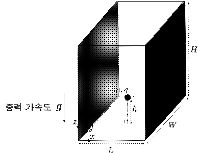

문제 1
아래 그림과 같은 길이 \(L\), 너비 \(W\), 높이 \(H\)를 갖는 직육면체 형태의 밀폐된 방이 있다. 이 방의 왼쪽과 오른쪽 벽면에는 전하가 균일하게 분포되어 있다. 두 벽면의 총 전하량의 크기는 같고 부호는 반대이다. 벽면 간 거리 \(L\)이 충분히 짧아 전기장이 방 전체에 고르게 형성되어 있다고 가정하자. 중력 가속도 \(g\)는 \(-z\)방향을 향하며, 방 전체는 유전율 \(\epsilon\)의 가스로 채워져 있다.

(1) 그림과 같이 질량 \(m\), 양의 전하 \(q\)를 갖는 구슬을 바닥면으로부터 높이 \(h\)인 지점에서 속도 0으로 자유 낙하를 시켰더니 구슬이 방 바닥면에 닿는 순간의 속도 크기가 \(v = 2\sqrt{gh}\)로 측정되었다. 이때 전기장의 크기를 구하시오. 단, 구슬은 바닥면을 제외한 방의 다른 면에는 닿지 않았으며, 구슬의 크기는 무시할 정도로 작고, 구슬에 작용하는 마찰력 및 구슬의 운동으로 인한 전자기파는 무시한다. [2점]
(2) 문제 (1)의 상황에서 오른쪽 벽면의 총 전하량의 크기를 구하시오. [2점]
(3) 방 안 가스를 유전율 \(2\epsilon\)의 새로운 가스로 교체하고 문제 (1)의 실험을 반복할 때, 구슬이 방 바닥면에 닿는 순간의 속도 크기를 구하시오. [1점]